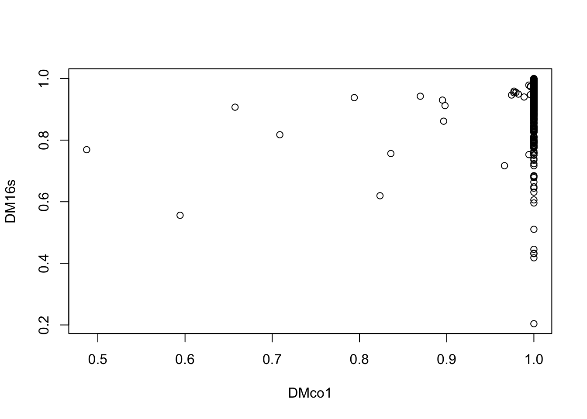
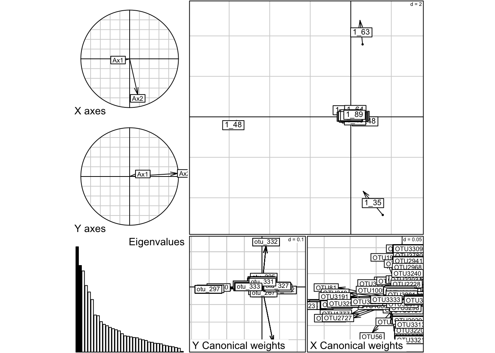
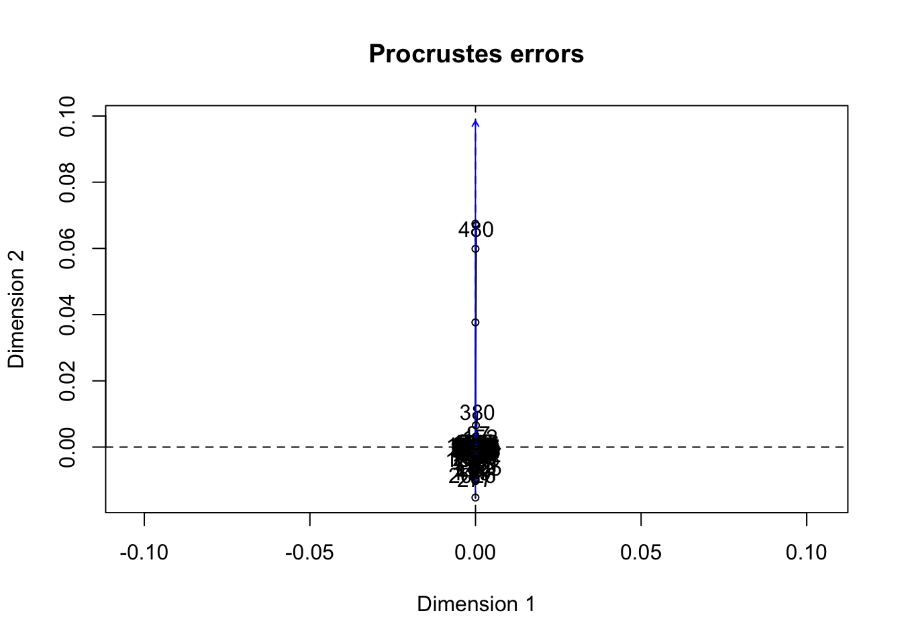

Assigned Reading:
Sections 10.5 (p. 597) and 11.5 (p. 696) from: Legendre, P. and L. Legendre. 2012. Numerical Ecology. Elsevier. link
Skim the math to whatever degree you desire.
Use a symmetric methods when you don’t have a hypothesis about the direction of effects between two matrices.
Examples? Counter-examples?
“These methods should not be used to test hypotheses about relationships between the original data tables.”
Mantel test
Analysis of Similarity (ANOSIM) and PERMANOVA
Co-inertia analysis
Procrustes analysis
Multiple factor analysis
vegan: functions for community composition analysis
mantel()protest()anosim()adonis() for PERMANOVAbetadisper() for testing homogeneity of within-group variancesecodist: functions for analysis of ecological dissimilarity
mantel()MRM()ape: functions fo phylogenetic analysis
mantel.test()ade4: functions for multivariate analysis for ecologists
mantel.rtest()coinertia() on two separate ordinations produced by dudi.pca() or dudi.pco()mfa() on a ktab dataframe that divides variables into “blocks” produced by ktab.data.frame()The following tests are used to test relationships between association matrices (i.e. distance or similarity matrices) not raw data! + Mantel test + Partial Mantel test + Multiple regression on distance matrices
# Load packages
library(readr)
library(dplyr)
library(phyloseq)
library(vegan)
library(ade4)
library(ggplot2)Compare two distance/similarity matrices that were obtained independently of each other
# Transpose otu tables from both phyloseqs and convert to data frame
data_16s <- as.data.frame(t(otu_table(merged_16s)))
data_CO1 <- as.data.frame(t(otu_table(merged_CO1)))
# Calculate distance using Bray-Curtis
DM16s <- distance(merged_16s,"bray")
DMco1 <- distance(merged_CO1, "bray")
# Mantel test (using three different methods)
mantel(DMco1, DM16s, method = "pearson", permutations = 999) ##
## Mantel statistic based on Pearson's product-moment correlation
##
## Call:
## mantel(xdis = DMco1, ydis = DM16s, method = "pearson", permutations = 999)
##
## Mantel statistic r: 0.1919
## Significance: 0.004
##
## Upper quantiles of permutations (null model):
## 90% 95% 97.5% 99%
## 0.0508 0.0797 0.0999 0.1480
## Permutation: free
## Number of permutations: 999mantel(DMco1, DM16s, method = "spearman", permutations = 999) ##
## Mantel statistic based on Spearman's rank correlation rho
##
## Call:
## mantel(xdis = DMco1, ydis = DM16s, method = "spearman", permutations = 999)
##
## Mantel statistic r: 0.1369
## Significance: 0.003
##
## Upper quantiles of permutations (null model):
## 90% 95% 97.5% 99%
## 0.0700 0.0897 0.1065 0.1190
## Permutation: free
## Number of permutations: 999mantel(DMco1, DM16s, method = "kendall", permutations = 999)##
## Mantel statistic based on Kendall's rank correlation tau
##
## Call:
## mantel(xdis = DMco1, ydis = DM16s, method = "kendall", permutations = 999)
##
## Mantel statistic r: 0.1113
## Significance: 0.012
##
## Upper quantiles of permutations (null model):
## 90% 95% 97.5% 99%
## 0.0642 0.0813 0.0915 0.1148
## Permutation: free
## Number of permutations: 999# Plot the distances against each other (just to see)
plot(DMco1, DM16s, type = "p")
The following tests can use raw data, not distance matrices (e.g. two community composition matrices)
dudi.16s <- dudi.pca(data_16s, scale=T, scan=F, nf=5)
dudi.c01 <- dudi.pca(data_CO1, scale=T, scan=F, nf=5)
co.in.data <- coinertia(dudi.16s, dudi.c01, scan=F, nf=5)
summary(co.in.data)## Coinertia analysis
##
## Class: coinertia dudi
## Call: coinertia(dudiX = dudi.16s, dudiY = dudi.c01, scannf = F, nf = 5)
##
## Total inertia: 5763
##
## Eigenvalues:
## Ax1 Ax2 Ax3 Ax4 Ax5
## 665.7 547.4 513.0 420.8 379.7
##
## Projected inertia (%):
## Ax1 Ax2 Ax3 Ax4 Ax5
## 11.550 9.498 8.901 7.301 6.588
##
## Cumulative projected inertia (%):
## Ax1 Ax1:2 Ax1:3 Ax1:4 Ax1:5
## 11.55 21.05 29.95 37.25 43.84
##
## (Only 5 dimensions (out of 36) are shown)
##
## Eigenvalues decomposition:
## eig covar sdX sdY corr
## 1 665.6710 25.80060 6.254968 4.257402 0.9688579
## 2 547.4037 23.39666 9.136070 2.684524 0.9539535
## 3 512.9977 22.64945 8.737747 2.794415 0.9276142
## 4 420.8116 20.51369 7.022618 4.022149 0.7262508
## 5 379.6807 19.48540 7.333985 3.131459 0.8484427
##
## Inertia & coinertia X (dudi.16s):
## inertia max ratio
## 1 39.12463 118.1844 0.3310474
## 12 122.59240 222.3012 0.5514699
## 123 198.94062 311.9950 0.6376404
## 1234 248.25778 387.0472 0.6414147
## 12345 302.04511 455.8617 0.6625805
##
## Inertia & coinertia Y (dudi.c01):
## inertia max ratio
## 1 18.12547 21.19416 0.8552106
## 12 25.33214 39.64262 0.6390127
## 123 33.14089 48.89262 0.6778301
## 1234 49.31858 58.03207 0.8498505
## 12345 59.12461 66.77656 0.8854097
##
## RV:
## 0.518941randtest(co.in.data, nrepet = 999)## Monte-Carlo test
## Call: randtest.coinertia(xtest = co.in.data, nrepet = 999)
##
## Observation: 0.518941
##
## Based on 999 replicates
## Simulated p-value: 0.927
## Alternative hypothesis: greater
##
## Std.Obs Expectation Variance
## -1.342338615 0.601967484 0.003825686plot(co.in.data)
RV.rtest(data_16s, data_CO1)
# Only run this once and then re-load
#procrust.data <- protest(data_CO1, data_16s)
# Save and reload the Procrustes analysis results
#save(procrust.data, file = "data/psanjuan/procrust_data.RData")
load("data/psanjuan/procrust_data.RData")
summary(procrust.data)plot(procrust.data)
For information on three-table methods see: